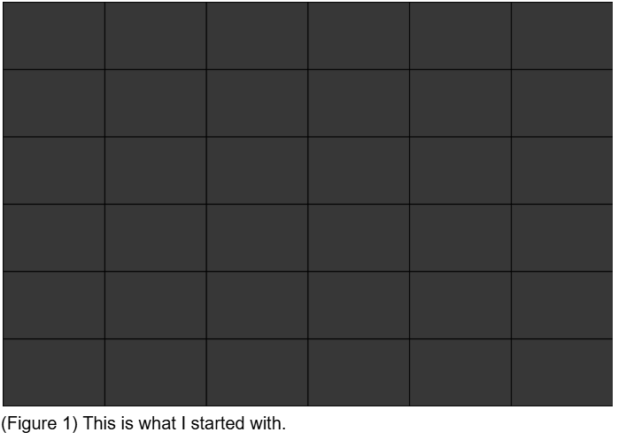
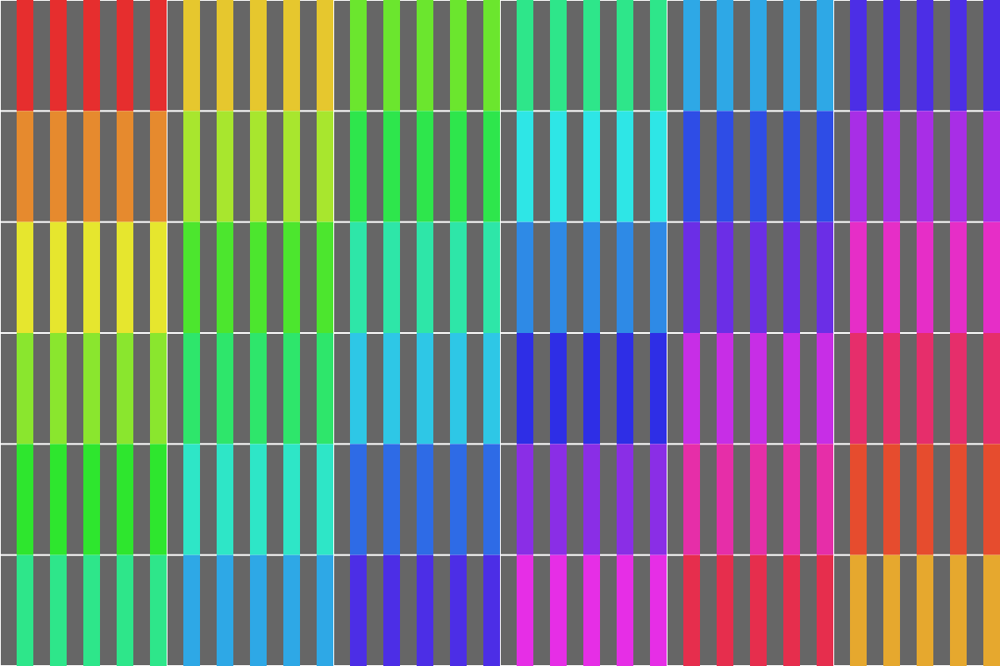
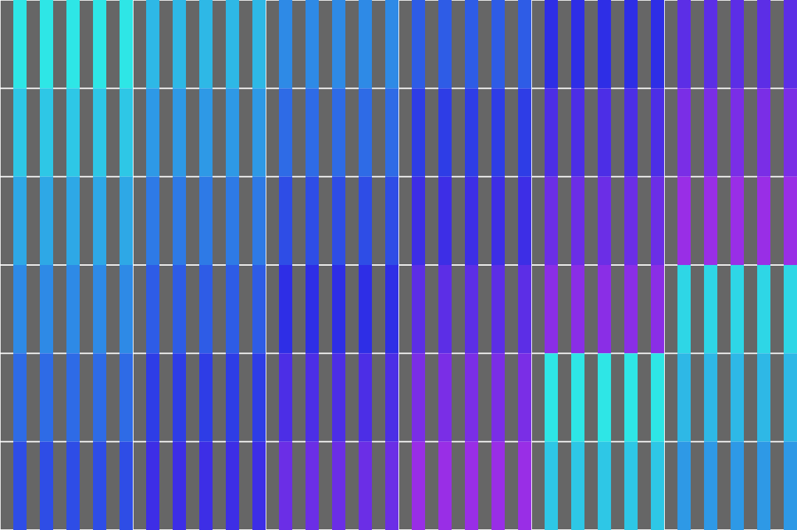
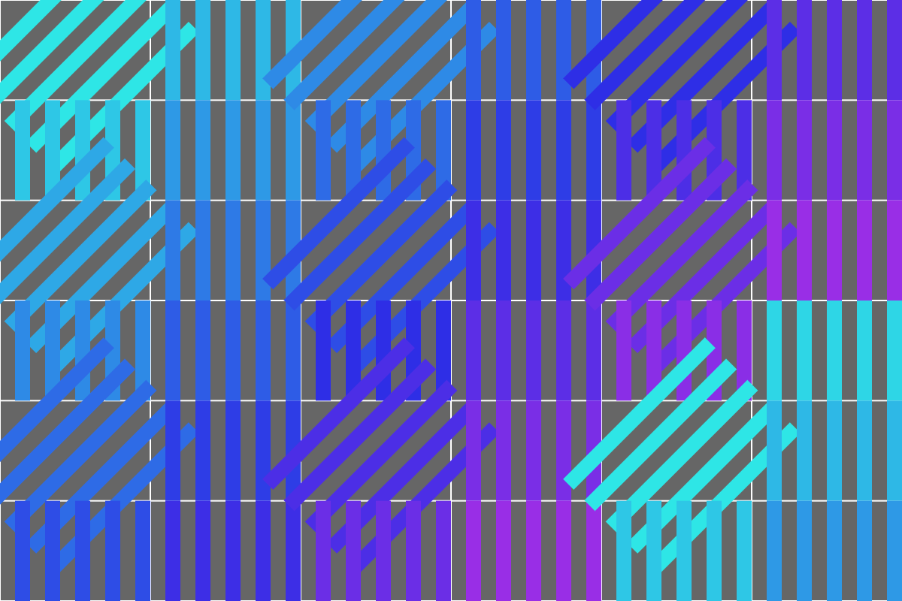
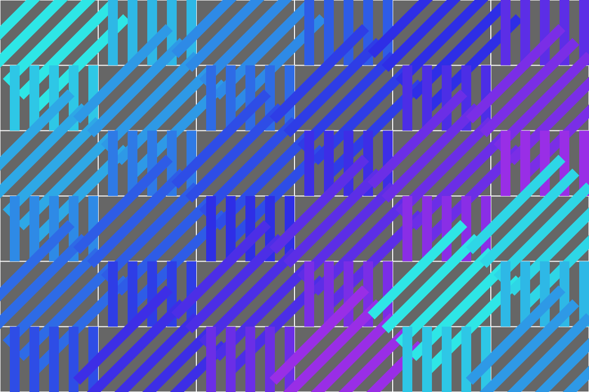
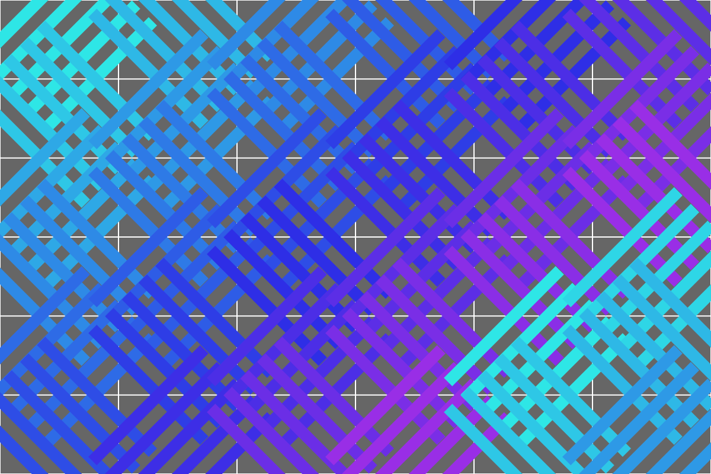
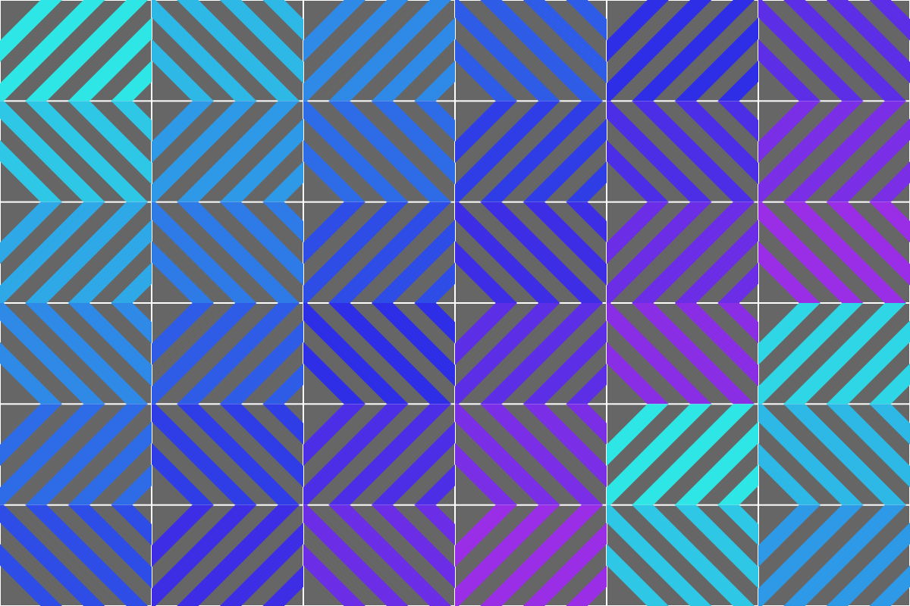
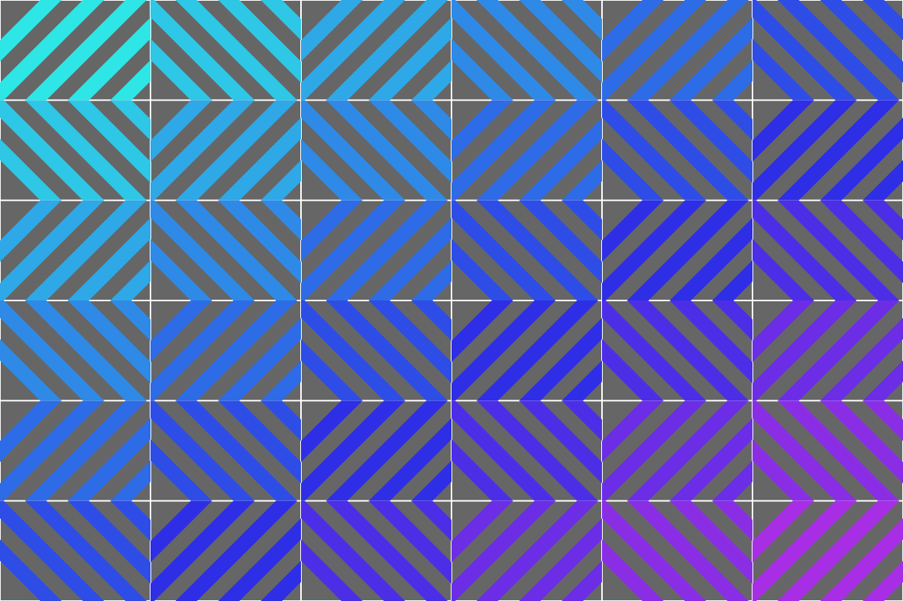

P5.js Pattern Assignment
Shruti Amritkar - M.Des, ArtCenter 2025
All strips in every rectangle rotate slowly and continuously. The rotation is designed so that after completing a full 360-degree rotation, the pattern returns to its original base configuration - the chevron/herringbone pattern. This creates a mesmerizing cycle where the pattern transforms through various states before returning to its starting point.
The rotation starts from the base diagonal orientation, ensuring that at rotation angle 0° (and every 360° thereafter), you see the original static pattern. As the animation progresses, all strips rotate together, creating fluid, wave-like transformations across the entire composition while maintaining the cool color gradient from cyan to purple.
For this pattern assignment I wanted something inspired by my paper cutting designs. I browsed through some of my previous designs and picked one with repetitive patterns in it. A rectangle with multiple rectangles or slits with alternate voids in it.
Next I started exploring the ways in which I can do this in p5js.
First - I started with making a basic rectangle of size (600x400). Then I divided that rectangle into 6 equal rectangles vertically and horizontally. Then I wanted a dark background so chose the code (55) for it. For making the grid I explored the p5js grid options.
This is what I started with.
Now I wanted to add slits to each of the rectangles. Even after exploring the grid options on the reference page, it was a bit confusing so I went to Claude AI for more help and then added some vertical slits and colors to my composition.
This shows the 5 vertical slits added to each of the rectangles.
Now I felt there were too many colors in this composition. I wanted to reduce a few of them. And make the composition in a cool color scheme only. So I changed the code accordingly to get colors (cyan, blue, purple).
// Color varies by position
let hue = (i * 50 + j * 30) % 360;
fill(hue, 80, 90);
// Cool colors only: hue range 180-280 (cyan, blue, purple)
let hue = 180 + (i * 15 + j * 10) % 100;
fill(hue, 80, 90);
This shows the 5 vertical slits with a cool color scheme.
Now I wanted to rotate the slits such that they are in diagonal position and are mirroring each other. First I started with the orientation of slits in the odd numbered rectangles.
This shows the changed orientation of slits in odd numbered rectangles.
Similarly now I wanted to change the orientation of the rest of the slits in all the rectangles and make them diagonal to form a pattern.
This shows the changed orientation of slits in forward slash (/) manner.
This shows the changed orientation of all the slits in odd and even rectangles. This creates a beautiful chevron/herringbone pattern
But the problem was that all of the slits were going outside the base grid that I started with in the very beginning. I wanted all the slits inside the rectangles. I needed to add some constraints. For this the 'Clipping' feature was added to keep all the slits within the boundaries of each of the rectangles.
All the slits within the constraints of the rectangles.
Now, I wanted to improve the color gradation from light to dark hues of cool colors.
// Cool colors only: hue range 180-280 (cyan, blue, purple)
let hue = 180 + ((i * 15 + j * 10) % 100);
fill(hue, 80, 90);
// Smooth color transition from cyan (180) to purple (280) based on column only
let hue = map(i, 0, numLines - 1, 180, 280);
fill(hue, 80, 90);
Changed color gradation.
